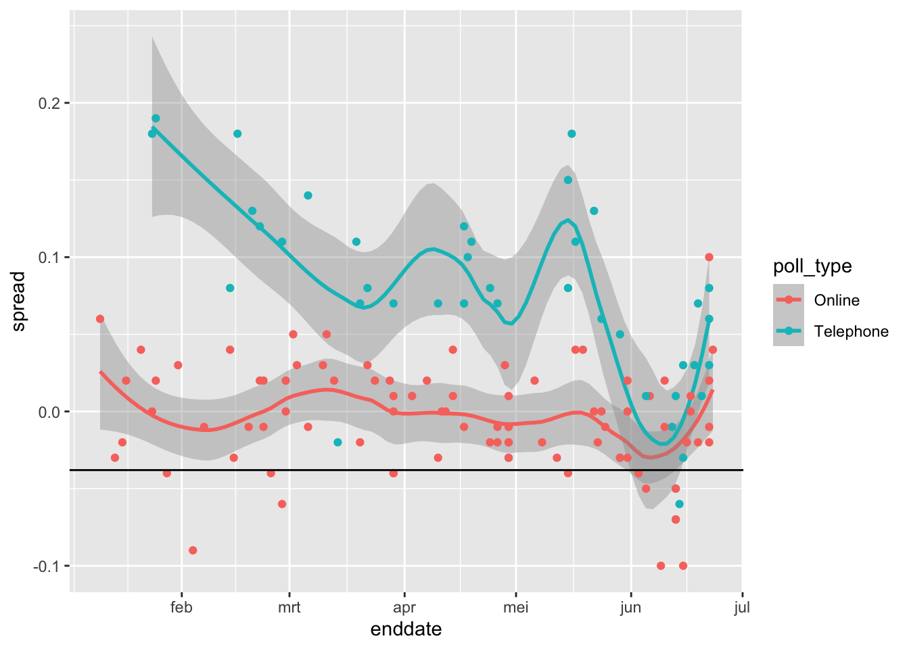
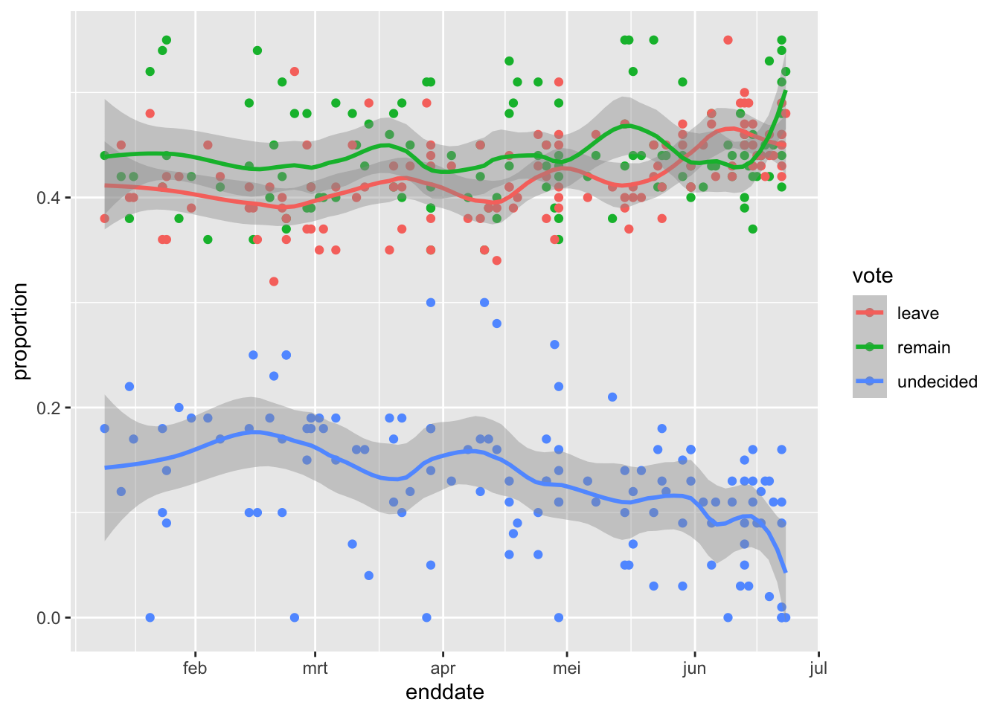

8 Section 7 Overview
In Section 7, you will learn how to use association and chi-squared tests to perform inference for binary, categorical, and ordinal data through an example looking at research funding rates.
After completing Section 7, you will be able to:
- Use association and chi-squared tests to perform inference on binary, categorical, and ordinal data.
- Calculate an odds ratio to get an idea of the magnitude of an observed effect.
8.1 Association Tests
The textbook for this section is available here up to and including the textbook section on two-by-two tables.
Key points
- We learn how to determine the probability that an observation is due to random variability given categorical, binary or ordinal data.
- Fisher’s exact test determines the p-value as the probability of observing an outcome as extreme or more extreme than the observed outcome given the null distribution.
- Data from a binary experiment are often summarized in two-by-two tables.
- The p-value can be calculated from a two-by-two table using Fisher’s exact test with the function
fisher.test().
Code: Research funding rates example
# load and inspect research funding rates object
data(research_funding_rates)
research_funding_rates## discipline applications_total applications_men applications_women awards_total awards_men awards_women success_rates_total success_rates_men success_rates_women
## 1 Chemical sciences 122 83 39 32 22 10 26.2 26.5 25.6
## 2 Physical sciences 174 135 39 35 26 9 20.1 19.3 23.1
## 3 Physics 76 67 9 20 18 2 26.3 26.9 22.2
## 4 Humanities 396 230 166 65 33 32 16.4 14.3 19.3
## 5 Technical sciences 251 189 62 43 30 13 17.1 15.9 21.0
## 6 Interdisciplinary 183 105 78 29 12 17 15.8 11.4 21.8
## 7 Earth/life sciences 282 156 126 56 38 18 19.9 24.4 14.3
## 8 Social sciences 834 425 409 112 65 47 13.4 15.3 11.5
## 9 Medical sciences 505 245 260 75 46 29 14.9 18.8 11.2# compute totals that were successful or not successful
totals <- research_funding_rates %>%
select(-discipline) %>%
summarize_all(funs(sum)) %>%
summarize(yes_men = awards_men,
no_men = applications_men - awards_men,
yes_women = awards_women,
no_women = applications_women - awards_women)## Warning: `funs()` is deprecated as of dplyr 0.8.0.
## Please use a list of either functions or lambdas:
##
## # Simple named list:
## list(mean = mean, median = median)
##
## # Auto named with `tibble::lst()`:
## tibble::lst(mean, median)
##
## # Using lambdas
## list(~ mean(., trim = .2), ~ median(., na.rm = TRUE))
## This warning is displayed once every 8 hours.
## Call `lifecycle::last_warnings()` to see where this warning was generated.# compare percentage of men/women with awards
totals %>% summarize(percent_men = yes_men/(yes_men + no_men),
percent_women = yes_women/(yes_women + no_women))## percent_men percent_women
## 1 0.17737 0.1489899Code: Two-by-two table and p-value for the Lady Tasting Tea problem
tab <- matrix(c(3,1,1,3), 2, 2)
rownames(tab) <- c("Poured Before", "Poured After")
colnames(tab) <- c("Guessed Before", "Guessed After")
tab## Guessed Before Guessed After
## Poured Before 3 1
## Poured After 1 3# p-value calculation with Fisher's Exact Test
fisher.test(tab, alternative = "greater")##
## Fisher's Exact Test for Count Data
##
## data: tab
## p-value = 0.2429
## alternative hypothesis: true odds ratio is greater than 1
## 95 percent confidence interval:
## 0.3135693 Inf
## sample estimates:
## odds ratio
## 6.4083098.2 Chi-Squared Tests
The textbook for this section is available here and here.
Key points
- If the sums of the rows and the sums of the columns in the two-by-two table are fixed, then the hypergeometric distribution and Fisher’s exact test can be used. Otherwise, we must use the chi-squared test.
- The chi-squared test compares the observed two-by-two table to the two-by-two table expected by the null hypothesis and asks how likely it is that we see a deviation as large as observed or larger by chance.
- The function
chisq.test()takes a two-by-two table and returns the p-value from the chi-squared test. - The odds ratio states how many times larger the odds of an outcome are for one group relative to another group.
- A small p-value does not imply a large odds ratio. If a finding has a small p-value but also a small odds ratio, it may not be a practically significant or scientifically significant finding.
- Because the odds ratio is a ratio of ratios, there is no simple way to use the Central Limit Theorem to compute confidence intervals. There are advanced methods for computing confidence intervals for odds ratios that we do not discuss here.
Code: Chi-squared test
# compute overall funding rate
funding_rate <- totals %>%
summarize(percent_total = (yes_men + yes_women) / (yes_men + no_men + yes_women + no_women)) %>%
.$percent_total
funding_rate## [1] 0.1654269# construct two-by-two table for observed data
two_by_two <- tibble(awarded = c("no", "yes"),
men = c(totals$no_men, totals$yes_men),
women = c(totals$no_women, totals$yes_women))
two_by_two## # A tibble: 2 x 3
## awarded men women
## <chr> <dbl> <dbl>
## 1 no 1345 1011
## 2 yes 290 177# compute null hypothesis two-by-two table
tibble(awarded = c("no", "yes"),
men = (totals$no_men + totals$yes_men) * c(1-funding_rate, funding_rate),
women = (totals$no_women + totals$yes_women) * c(1-funding_rate, funding_rate))## # A tibble: 2 x 3
## awarded men women
## <chr> <dbl> <dbl>
## 1 no 1365. 991.
## 2 yes 270. 197.# chi-squared test
chisq_test <- two_by_two %>%
select(-awarded) %>% chisq.test()
chisq_test$p.value## [1] 0.05091372Code: Odds ratio
# odds of getting funding for men
odds_men <- (two_by_two$men[2] / sum(two_by_two$men)) /
(two_by_two$men[1] / sum(two_by_two$men))
# odds of getting funding for women
odds_women <- (two_by_two$women[2] / sum(two_by_two$women)) /
(two_by_two$women[1] / sum(two_by_two$women))
# odds ratio - how many times larger odds are for men than women
odds_men/odds_women## [1] 1.231554Code: p-value and odds ratio responses to increasing sample size
# multiplying all observations by 10 decreases p-value without changing odds ratio
two_by_two %>%
select(-awarded) %>%
mutate(men = men*10, women = women*10) %>%
chisq.test()##
## Pearson's Chi-squared test with Yates' continuity correction
##
## data: .
## X-squared = 39.935, df = 1, p-value = 2.625e-108.3 Assessment - Association and Chi-Squared Tests
- In a previous exercise, we determined whether or not each poll predicted the correct winner for their state in the 2016 U.S. presidential election.
Each poll was also assigned a grade by the poll aggregator. Now we’re going to determine if polls rated A- made better predictions than polls rated C-.
In this exercise, filter the errors data for just polls with grades A- and C-. Calculate the proportion of times each grade of poll predicted the correct winner.
# The 'errors' data have already been loaded. Examine them using the `head` function.
head(errors)## state startdate enddate pollster grade spread lower upper error hit
## 1 New Mexico 2016-11-06 2016-11-06 Zia Poll <NA> 0.02 -0.001331221 0.0413312213 -0.063 TRUE
## 2 Virginia 2016-11-03 2016-11-04 Public Policy Polling B+ 0.05 -0.005634504 0.1056345040 -0.004 TRUE
## 3 Iowa 2016-11-01 2016-11-04 Selzer & Company A+ -0.07 -0.139125210 -0.0008747905 0.024 TRUE
## 4 Wisconsin 2016-10-26 2016-10-31 Marquette University A 0.06 0.004774064 0.1152259363 0.067 FALSE
## 5 North Carolina 2016-11-04 2016-11-06 Siena College A 0.00 -0.069295191 0.0692951912 0.036 FALSE
## 6 Georgia 2016-11-06 2016-11-06 Landmark Communications B -0.03 -0.086553820 0.0265538203 0.021 TRUE# Generate an object called 'totals' that contains the numbers of good and bad predictions for polls rated A- and C-
totals <- errors %>% filter(grade %in% c("A-", "C-")) %>%
group_by(grade,hit) %>% summarize(num = n()) %>% spread(grade, num)## `summarise()` regrouping output by 'grade' (override with `.groups` argument)totals## # A tibble: 2 x 3
## hit `C-` `A-`
## <lgl> <int> <int>
## 1 FALSE 50 26
## 2 TRUE 311 106# Print the proportion of hits for grade A- polls to the console
p_hitA <- totals[[2,3]]/sum(totals[[3]])
p_hitA## [1] 0.8030303# Print the proportion of hits for grade C- polls to the console
p_hitC <- totals[[2,2]]/sum(totals[[2]])
p_hitC## [1] 0.8614958- We found that the A- polls predicted the correct winner about 80% of the time in their states and C- polls predicted the correct winner about 86% of the time.
Use a chi-squared test to determine if these proportions are different.
# The 'totals' data have already been loaded. Examine them using the `head` function.
head(totals)## # A tibble: 2 x 3
## hit `C-` `A-`
## <lgl> <int> <int>
## 1 FALSE 50 26
## 2 TRUE 311 106# Perform a chi-squared test on the hit data. Save the results as an object called 'chisq_test'.
chisq_test <- totals %>%
select(-hit) %>% chisq.test()
# Print the p-value of the chi-squared test to the console
chisq_test$p.value## [1] 0.1467902- It doesn’t look like the grade A- polls performed significantly differently than the grade C- polls in their states.
Calculate the odds ratio to determine the magnitude of the difference in performance between these two grades of polls.
# The 'totals' data have already been loaded. Examine them using the `head` function.
head(totals)## # A tibble: 2 x 3
## hit `C-` `A-`
## <lgl> <int> <int>
## 1 FALSE 50 26
## 2 TRUE 311 106# Generate a variable called `odds_C` that contains the odds of getting the prediction right for grade C- polls
odds_C <- (totals[[2,2]] / sum(totals[[2]])) /
(totals[[1,2]] / sum(totals[[2]]))
# Generate a variable called `odds_A` that contains the odds of getting the prediction right for grade A- polls
odds_A <- (totals[[2,3]] / sum(totals[[3]])) /
(totals[[1,3]] / sum(totals[[3]]))
# Calculate the odds ratio to determine how many times larger the odds ratio is for grade A- polls than grade C- polls
odds_A/odds_C## [1] 0.6554539- We did not find meaningful differences between the poll results from grade A- and grade C- polls in this subset of the data, which only contains polls for about a week before the election.
Imagine we expanded our analysis to include all election polls and we repeat our analysis. In this hypothetical scenario, we get that the p-value for the difference in prediction success if 0.0015 and the odds ratio describing the effect size of the performance of grade A- over grade B- polls is 1.07.
Based on what we learned in the last section, which statement reflects the best interpretation of this result?
- A. The p-value is below 0.05, so there is a significant difference. Grade A- polls are significantly better at predicting winners.
- B. The p-value is too close to 0.05 to call this a significant difference. We do not observe a difference in performance.
- C. The p-value is below 0.05, but the odds ratio is very close to 1. There is not a scientifically significant difference in performance.
- D. The p-value is below 0.05 and the odds ratio indicates that grade A- polls perform significantly better than grade C- polls.
8.4 Comprehensive Assessment: Brexit
8.5 Brexit poll analysis - Part 1
Directions
There are 12 multi-part problems in this comprehensive assessment that review concepts from the entire course. The problems are split over 3 pages. Make sure you read the instructions carefully and run all pre-exercise code.
For numeric entry problems, you have 10 attempts to input the correct answer. For true/false problems, you have 2 attempts.
If you have questions, visit the “Brexit poll analysis” discussion forum that follows the assessment.
IMPORTANT: Some of these exercises use dslabs datasets that were added in a July 2019 update. Make sure your package is up to date with the command install.packages("dslabs").
Overview
In June 2016, the United Kingdom (UK) held a referendum to determine whether the country would “Remain” in the European Union (EU) or “Leave” the EU. This referendum is commonly known as Brexit. Although the media and others interpreted poll results as forecasting “Remain” (\(p > 0.5\)), the actual proportion that voted “Remain” was only 48.1% (\(p = 0.481\)) and the UK thus voted to leave the EU. Pollsters in the UK were criticized for overestimating support for “Remain”.
In this project, you will analyze real Brexit polling data to develop polling models to forecast Brexit results. You will write your own code in R and enter the answers on the edX platform.
Important definitions
Data Import
Import the brexit_polls polling data from the dslabs package and set options for the analysis:
# suggested options
options(digits = 3)
# load brexit_polls object
data(brexit_polls)Final Brexit parameters
Define \(p = 0.481\) as the actual percent voting “Remain” on the Brexit referendum and \(d = 2p - 1 = -0.038\) as the actual spread of the Brexit referendum with “Remain” defined as the positive outcome:
p <- 0.481 # official proportion voting "Remain"
d <- 2*p-1 # official spread8.5.0.1 Question 1: The final proportion of voters choosing “Remain” was p=0.481. Consider a poll with a sample of N=1500 voters.
What is the expected total number of voters in the sample choosing “Remain”?
p <- 0.481
N <- 1500
N*p## [1] 722What is the standard error of the total number of voters in the sample choosing “Remain”?
sqrt(N*p*(1-p))## [1] 19.4What is the expected value of \(\hat{X}\), the proportion of “Remain” voters?
X_hat <- p
X_hat## [1] 0.481What is the standard error of \(\hat{X}\), the proportion of “Remain” voters?
sqrt(p*(1-p)/N)## [1] 0.0129What is the expected value of \(d\), the spread between the proportion of “Remain” voters and “Leave” voters?
2*p-1## [1] -0.038What is the standard error of \(d\), the spread between the proportion of “Remain” voters and “Leave” voters?
2*sqrt(p*(1-p)/N)## [1] 0.02588.5.0.2 Question 2: Load and inspect the brexit_polls dataset from dslabs, which contains actual polling data for the 6 months before the Brexit vote.
Raw proportions of voters preferring “Remain”, “Leave”, and “Undecided” are available (remain, leave, undecided) The spread is also available (spread), which is the difference in the raw proportion of voters choosing “Remain” and the raw proportion choosing “Leave”.
Calculate x_hat for each poll, the estimate of the proportion of voters choosing “Remain” on the referendum day (\(p = 0.481\)), given the observed spread and the relationship \(\hat{d} = 2\hat{X} - 1\). Use mutate() to add a variable x_hat to the `brexit_polls object by filling in the skeleton code below:
brexit_polls <- brexit_polls %>%
mutate(x_hat = __________)What is the average of the observed spreads (spread)?
brexit_polls <- brexit_polls %>%
mutate(x_hat = (spread+1)/2)
mean(brexit_polls$spread)## [1] 0.0201What is the standard deviation of the observed spreads?
sd(brexit_polls$spread)## [1] 0.0588What is the average of x_hat, the estimates of the parameter \(p\)?
mean(brexit_polls$x_hat)## [1] 0.51What is the standard deviation of x_hat?
sd(brexit_polls$x_hat)## [1] 0.02948.5.0.3 Question 3: Confidence interval of a Brexit poll
Consider the first poll in brexit_polls, a YouGov poll run on the same day as the Brexit referendum:
brexit_polls[1,]## startdate enddate pollster poll_type samplesize remain leave undecided spread x_hat
## 1 2016-06-23 2016-06-23 YouGov Online 4772 0.52 0.48 0 0.04 0.52Use qnorm to compute the 95% confidence interval for \(\hat{X}\).
What is the lower bound of the 95% confidence interval?
x_hat <- 0.52
N <- 4772
se_hat <- sqrt(x_hat*(1-x_hat)/N)
x_hat - qnorm(.975)*se_hat## [1] 0.506What is the upper bound of the 95% confidence interval?
x_hat + qnorm(.975)*se_hat## [1] 0.534Does the 95% confidence interval predict a winner (does not cover \(p = 0.5\))? Does the 95% confidence interval cover the true value of \(p\) observed during the referendum?
!between(0.5, x_hat - qnorm(.975)*se_hat, x_hat + qnorm(.975)*se_hat) # predicts winner## [1] TRUEbetween(0.481, x_hat - qnorm(.975)*se_hat, x_hat + qnorm(.975)*se_hat) # does not cover p## [1] FALSE- A. The interval predicts a winner and covers the true value of \(p\).
- B. The interval predicts a winner but does not cover the true value of \(p\).
- C. The interval does not predict a winner but does cover the true value of \(p\).
- D. The interval does not predict a winner and does not cover the true value of \(p\).
8.6 Brexit poll analysis - Part 2
8.6.0.1 Question 4: Create the data frame june_polls containing only Brexit polls ending in June 2016 (enddate of “2016-06-01” and later).
We will calculate confidence intervals for all polls and determine how many cover the true value of \(d\).
First, use mutate() to calculate a plug-in estimate se_x_hat for the standard error of the estimate \(\hat{\mbox{SE}}[X]\) for each poll given its sample size and value of \(\hat{X}\) (x_hat). Second, use mutate() to calculate an estimate for the standard error of the spread for each poll given the value of se_x_hat.
Then, use mutate() to calculate upper and lower bounds for 95% confidence intervals of the spread. Last, add a column hit that indicates whether the confidence interval for each poll covers the correct spread \(d = -0.038\).
How many polls are in june_polls?
june_polls <- brexit_polls %>%
filter(enddate >= "2016-06-01")
nrow(june_polls)## [1] 32What proportion of polls have a confidence interval that covers the value 0?
june_polls <- june_polls %>%
mutate(se_x_hat = sqrt(x_hat*(1-x_hat)/samplesize),
se_spread = 2*se_x_hat,
ci_lower_spread = spread - qnorm(0.975)*se_spread,
ci_upper_spread = spread + qnorm(0.975)*se_spread)
mean(june_polls$ci_lower_spread < 0 & june_polls$ci_upper_spread > 0)## [1] 0.625What proportion of polls predict “Remain” (confidence interval entirely above 0)?
mean(june_polls$ci_lower_spread > 0)## [1] 0.125What proportion of polls have a confidence interval covering the true value of \(d\)?
june_polls <- june_polls %>%
mutate(hit = (2*p-1 > ci_lower_spread) & (2*p-1 < ci_upper_spread))
mean(june_polls$hit)## [1] 0.5628.6.0.2 Question 5: Group and summarize the june_polls object by pollster to find the proportion of hits for each pollster and the number of polls per pollster.
Use arrange() to sort by hit rate.
june_polls %>%
group_by(pollster) %>%
summarize(hit_rate=mean(hit), n()) %>%
arrange(hit_rate)## `summarise()` ungrouping output (override with `.groups` argument)## # A tibble: 12 x 3
## pollster hit_rate `n()`
## <fct> <dbl> <int>
## 1 BMG Research 0 2
## 2 ORB/Telegraph 0 1
## 3 Populus 0 1
## 4 ComRes 0.333 3
## 5 Ipsos MORI 0.5 2
## 6 Survation 0.5 2
## 7 YouGov 0.556 9
## 8 Opinium 0.667 3
## 9 ORB 0.667 3
## 10 ICM 1 3
## 11 Survation/IG Group 1 1
## 12 TNS 1 2Which of the following are TRUE?
- A. Unbiased polls and pollsters will theoretically cover the correct value of the spread 50% of the time.
- B. Only one pollster had a 100% success rate in generating confidence intervals that covered the correct value of the spread.
- C. The pollster with the highest number of polls covered the correct value of the spread in their confidence interval over 60% of the time.
- D. All pollsters produced confidence intervals covering the correct spread in at least 1 of their polls.
- E. The results are consistent with a large general bias that affects all pollsters.
8.6.0.3 Question 6: Boxplot of Brexit polls by poll type
Make a boxplot of the spread in june_polls by poll type.
june_polls %>% group_by(poll_type) %>%
ggplot(aes(poll_type,spread)) +
geom_boxplot()
Which of the following are TRUE?
- A. Online polls tend to show support for “Remain” (spread > 0).
- B. Telephone polls tend to show support “Remain” (spread > 0).
- C. Telephone polls tend to show higher support for “Remain” than online polls (higher spread).
- D. Online polls have a larger interquartile range (IQR) for the spread than telephone polls, indicating that they are more variable.
- E. Poll type introduces a bias that affects poll results.
8.6.0.4 Question 7: Calculate the confidence intervals of the spread combined across all polls in june_polls, grouping by poll type.
Recall that to determine the standard error of the spread, you will need to double the standard error of the estimate.
Use this code (which determines the total sample size per poll type, gives each spread estimate a weight based on the poll’s sample size, and adds an estimate of p from the combined spread) to begin your analysis:
combined_by_type <- june_polls %>%
group_by(poll_type) %>%
summarize(N = sum(samplesize),
spread = sum(spread*samplesize)/N,
p_hat = (spread + 1)/2)## `summarise()` ungrouping output (override with `.groups` argument)#What is the lower bound of the 95% confidence interval for online voters?
combined_by_type <- june_polls %>%
group_by(poll_type) %>%
summarize(N = sum(samplesize),
spread = sum(spread*samplesize)/N,
p_hat = (spread + 1)/2,
se_spread = 2*sqrt(p_hat*(1-p_hat)/N),
spread_lower = spread - qnorm(.975)*se_spread,
spread_upper = spread + qnorm(.975)*se_spread)## `summarise()` ungrouping output (override with `.groups` argument)combined_by_type %>%
filter(poll_type == "Online") %>%
pull(spread_lower)## [1] -0.0165What is the upper bound of the 95% confidence interval for online voters?
combined_by_type %>%
filter(poll_type == "Online") %>%
pull(spread_upper)## [1] 0.001658.6.0.5 Question 8: Interpret the confidence intervals for the combined spreads for each poll type calculated in the previous problem.
Which of the following are TRUE about the confidence intervals of the combined spreads for different poll types?
Select ALL correct answers.
- A. Neither set of combined polls makes a prediction about the outcome of the Brexit referendum (a prediction is possible if a confidence interval does not cover 0).
- B. The confidence interval for online polls is larger than the confidence interval for telephone polls.
- C. The confidence interval for telephone polls is covers more positive values than the confidence interval for online polls.
- D. The confidence intervals for different poll types do not overlap.
- E. Neither confidence interval covers the true value of 𝑑=−0.038.
8.7 Brexit poll analysis - Part 3
8.7.0.1 Question 9: Define brexit_hit, with the following code, which computes the confidence intervals for all Brexit polls in 2016 and then calculates whether the confidence interval covers the actual value of the spread \(d = -0.038\):
brexit_hit <- brexit_polls %>%
mutate(p_hat = (spread + 1)/2,
se_spread = 2*sqrt(p_hat*(1-p_hat)/samplesize),
spread_lower = spread - qnorm(.975)*se_spread,
spread_upper = spread + qnorm(.975)*se_spread,
hit = spread_lower < d & spread_upper > d) %>%
select(poll_type, hit)Use brexit_hit to make a two-by-two table of poll type and hit status.
Then use the chisq.test() function to perform a chi-squared test to determine whether the difference in hit rate is significant.
What is the p-value of the chi-squared test comparing the hit rate of online and telephone polls?
brexit_chisq <- table(brexit_hit$poll_type, brexit_hit$hit)
chisq.test(brexit_chisq)$p.value## [1] 0.00101Determine which poll type has a higher probability of producing a confidence interval that covers the correct value of the spread. Also determine whether this difference is statistically significant at a p-value cutoff of 0.05.
# online > telephone
hit_rate <- brexit_hit %>%
group_by(poll_type) %>%
summarize(avg = mean(hit))## `summarise()` ungrouping output (override with `.groups` argument)hit_rate$avg[hit_rate$poll_type == "Online"] > hit_rate$avg[hit_rate$poll_type == "Telephone"]## [1] TRUE# statistically significant
chisq.test(brexit_chisq)$p.value < 0.05## [1] TRUEWhich of the following is true?
- A. Online polls are more likely to cover the correct value of the spread and this difference is statistically significant.
- B. Online polls are more likely to cover the correct value of the spread, but this difference is not statistically significant.
- C. Telephone polls are more likely to cover the correct value of the spread and this difference is statistically significant.
- D. Telephone polls are more likely to cover the correct value of the spread, but this difference is not statistically significant.
8.7.0.2 Question 10: Use the two-by-two table constructed in the previous exercise to calculate the odds ratio between the hit rate of online and telephone polls to determine the magnitude of the difference in performance between the poll types.
Calculate the odds that an online poll generates a confidence interval that covers the actual value of the spread.
# from previous question
brexit_chisq <- table(brexit_hit$poll_type, brexit_hit$hit)
# convert to data frame
chisq_df <- as.data.frame(brexit_chisq)
online_true <- chisq_df$Freq[chisq_df$Var1 == "Online" & chisq_df$Var2 == "TRUE"]
online_false <- chisq_df$Freq[chisq_df$Var1 == "Online" & chisq_df$Var2 == "FALSE"]
online_odds <- online_true/online_false
online_odds## [1] 1.3Calculate the odds that a telephone poll generates a confidence interval that covers the actual value of the spread.
phone_true <- chisq_df$Freq[chisq_df$Var1 == "Telephone" & chisq_df$Var2 == "TRUE"]
phone_false <- chisq_df$Freq[chisq_df$Var1 == "Telephone" & chisq_df$Var2 == "FALSE"]
phone_odds <- phone_true/phone_false
phone_odds## [1] 0.312Calculate the odds ratio to determine how many times larger the odds are for online polls to hit versus telephone polls.
online_odds/phone_odds## [1] 4.158.7.0.3 Question 11: Use brexit_polls to make a plot of the spread (spread) over time (enddate) colored by poll type (poll_type).
Use geom_smooth() with method = "loess" to plot smooth curves with a span of 0.4. Include the individual data points colored by poll type. Add a horizontal line indicating the final value of \(d = -.038\).
brexit_polls %>%
ggplot(aes(enddate, spread, color = poll_type)) +
geom_smooth(method = "loess", span = 0.4) +
geom_point() +
geom_hline(aes(yintercept = -.038))## `geom_smooth()` using formula 'y ~ x'
Which of the following plots is correct?
- B.

Plotting spread over time
8.7.0.4 Question 12: Use the following code to create the object brexit_long, which has a column vote containing the three possible votes on a Brexit poll (“remain”, “leave”, “undecided”) and a column proportion containing the raw proportion choosing that vote option on the given poll:
brexit_long <- brexit_polls %>%
gather(vote, proportion, "remain":"undecided") %>%
mutate(vote = factor(vote))Make a graph of proportion over time colored by vote. Add a smooth trendline with geom_smooth() and method = "loess" with a span of 0.3.
brexit_long %>%
ggplot(aes(enddate, proportion, col=vote)) +
geom_point() +
geom_smooth(method = "loess", span=0.3)## `geom_smooth()` using formula 'y ~ x'
Which of the following are TRUE?
- A. The percentage of undecided voters declines over time but is still around 10% throughout June.
- B. Over most of the date range, the confidence bands for “Leave” and “Remain” overlap.
- C. Over most of the date range, the confidence bands for “Leave” and “Remain” are below 50%.
- D. In the first half of June, “Leave” was polling higher than “Remain”, although this difference was within the confidence intervals.
- E. At the time of the election in late June, the percentage voting “Leave” is trending upwards.